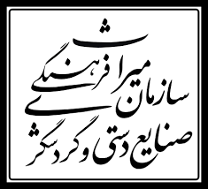
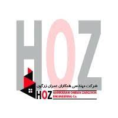
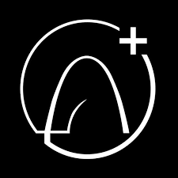
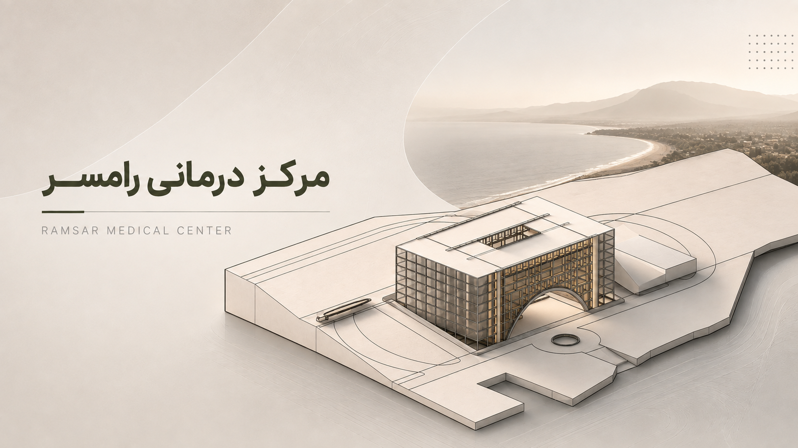
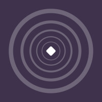

10 // وزارت میراث فرهنگی
همکار پژوهشی
آبان 1404 — تاکنونمشارکت در پروژه ساماندهی مکانی آثار ثبتشده ملی، تحلیلهای فضایی (GIS) و توسعه آرشیو دیجیتال.

مشارکت در پروژه ساماندهی مکانی آثار ثبتشده ملی، تحلیلهای فضایی (GIS) و توسعه آرشیو دیجیتال.
تالیف و تدریس دورههای آموزشی تخصصی نرمافزارها و هوش مصنوعی در معماری برای مهندسان و دانشجویان.
مشاهده دورهها در فرادرس ↗
طراحی معماری مراکز تخصصی درمانی مطابق استانداردهای بیمارستانی و تولید محتوای تخصصی ارائهها.

تولید ویدیوهای آموزشی کاربردی پیرامون افزونههای تخصصی معماری و تحلیل تاریخ معماری جهان.
همکاری با استاد در مدیریت کلاس، بازخورد به دانشجویان و هدایت پروژههای پیچیده بیمارستانی.
برگزاری کارگاههای تخصصی افترافکت و فتوشاپ جهت ارتقای مهارتهای ارائه کارکنان.

طراحی سرفصل و تدریس دوره جامع موشن گرافیک جهت آموزش مهارتهای گرافیک متحرک.
تحصیل ارشد معماری با تمرکز بر پژوهشهای علمی و استانداردهای طراحی محیطهای درمانی.

تجربه اجرایی در پروژههای واقعی، نظارت بر بتنریزی سقفها، تیرریزی و اجرای اسکلت سازه.

نگارش و تولید محتوای صوتی با محوریت مسابقات معماری و تحلیل آثار برجسته (اپیزود منارۀ هشتم).
توضیحات